| [Top][Contents][Index][ ? ] |
LilyPond — Essay on automated music engraving
|
This essay discusses automatic music engraving functions within LilyPond version 2.16.2. |
| 1. Music engraving | ||
| 2. Literature list | ||
| A. GNU Free Documentation License | License of this document. | |
| B. LilyPond index |
|
For more information about how this manual fits with the other documentation, or to read this manual in other formats, see Manuals. If you are missing any manuals, the complete documentation can be found at http://www.lilypond.org/. |
| [ << Top ] | [Top][Contents][Index][ ? ] | [ Literature list >> ] | ||
| [ < Top ] | [ Up : Top ] | [ The LilyPond story > ] | ||
1. Music engraving
This essay describes why LilyPond was created and how it can produce such beautiful sheet music.
| 1.1 The LilyPond story | ||
| 1.2 Engraving details | ||
| 1.3 Automated engraving | ||
| 1.4 Building software | ||
| 1.5 Putting LilyPond to work | ||
| 1.6 Engraved examples (BWV 861) |
| [ << Music engraving ] | [Top][Contents][Index][ ? ] | [ Literature list >> ] | ||
| [ < Music engraving ] | [ Up : Music engraving ] | [ Engraving details > ] | ||
1.1 The LilyPond story
Long before LilyPond had been used to engrave beautiful performance scores, before it could create university course notes or even simple melodies, before there was a community of users around the world or even an essay on music engraving, LilyPond began with a question:
Why does most computer output fail to achieve the beauty and balance of a hand-engraved score?
Some of the answers can be found by examining the two scores below. The first score is a beautiful hand-engraved score from 1950 and the second is a modern, computer-engraved edition.
Bärenreiter BA 320, ©1950:
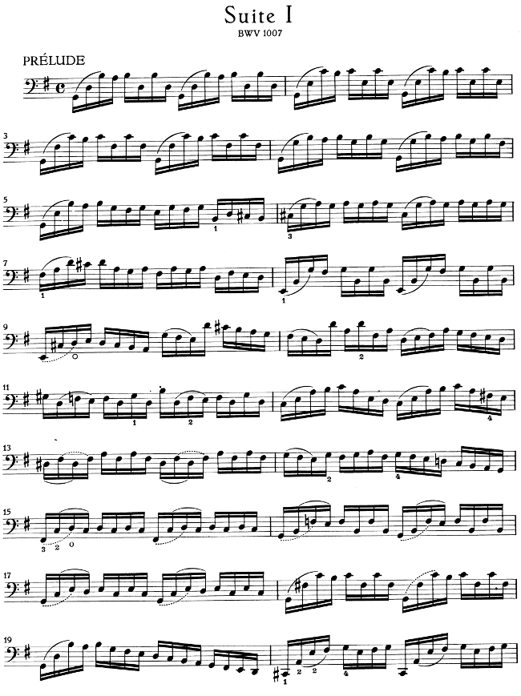
Henle no. 666, ©2000:
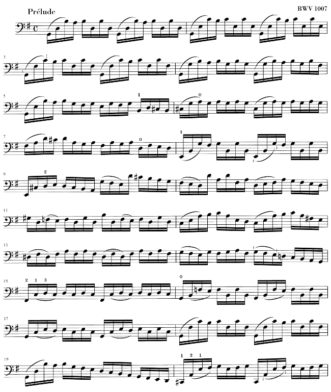
The notes here are identical, taken from Bach’s first Suite for solo cello, but the appearance is different, especially if you print them out and view them from a distance. (The PDF version of this manual has high-resolution images suitable for printing.) Try reading or playing from each of the scores and you will find that the hand-engraved score is more enjoyable to use. It has flowing lines and movement, and it feels like a living, breathing piece of music, while the newer edition seems cold and mechanical.
It is hard to immediately see what makes the difference with the newer edition. Everything looks neat and tidy, possibly even “better” because it looks more computerized and uniform. This really puzzled us for quite a while. We wanted to improve computer notation, but we first had to figure out what was wrong with it.
The answer lies in the precise, mathematical uniformity of the newer edition. Find the bar line in the middle of each line: in the hand-engraved score the position of these bar lines has some natural variation, while in the newer version they line up almost perfectly. This is shown in these simplified page layout diagrams, traced from the hand-engraved (left) and computer-generated music (right):
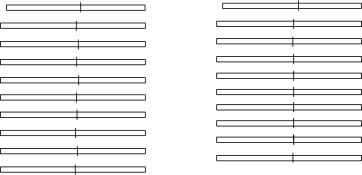
In the computer-generated output, even the individual note heads are aligned in vertical columns, making the contour of the melody disappear into a rigid grid of musical markings.
There are other differences as well: in the hand-engraved edition the vertical lines are all stronger, the slurs lie closer to the note heads, and there is more variety in the slopes of the beams. Although such details may seem like nitpicking, the result is a score that is easier to read. In the computer-generated output, each line is nearly identical and if the musician looks away for a moment she will be lost on the page.
LilyPond was designed to solve the problems we found in existing software and to create beautiful music that mimics the finest hand-engraved scores.
| [ << Music engraving ] | [Top][Contents][Index][ ? ] | [ Literature list >> ] | ||
| [ < The LilyPond story ] | [ Up : Music engraving ] | [ Music fonts > ] | ||
1.2 Engraving details
The art of music typography is called (plate) engraving, a term that derives from the manual process of music printing1. Just a few decades ago, sheet music was made by cutting and stamping the music into a zinc or pewter plate in mirror image. The plate would be inked, and the depressions caused by the cutting and stamping would hold ink. An image was formed by pressing paper to the plate. The stamping and cutting was done completely by hand and making a correction was cumbersome, so the engraving had to be nearly perfect in one go. Engraving was a highly specialized skill; a craftsman had to complete around five years of training before earning the title of master engraver, and another five years of experience were necessary to become truly skilled.
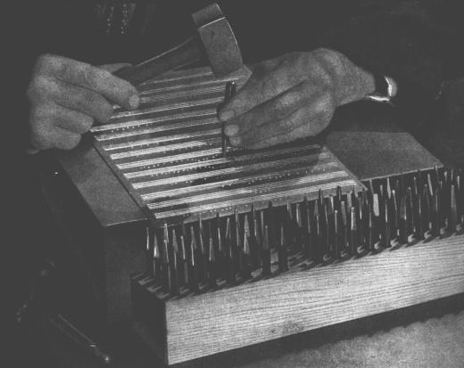
LilyPond is inspired by traditional manual engravings published by European music publishers in and towards the end of the first half of the twentieth century, including Bärenreiter, Duhem, Durand, Hofmeister, Peters, and Schott. This is sometimes regarded as the peak of traditional musical engraving practice. As we have studied these editions we have learned a great deal about what goes into a well-engraved score, and the aspects that we wanted to imitate in LilyPond.
| Music fonts | ||
| Optical spacing | ||
| Ledger lines | ||
| Optical sizing | ||
| Why work so hard? |
| [ << Music engraving ] | [Top][Contents][Index][ ? ] | [ Literature list >> ] | ||
| [ < Engraving details ] | [ Up : Engraving details ] | [ Optical spacing > ] | ||
Music fonts
The images below illustrate some differences between traditional engraving and typical computer output. The left picture shows a scan of a flat symbol from a hand-engraved Bärenreiter edition, while the right picture depicts a symbol from an edition of the same music published in 2000. Although both images are printed in the same shade of ink, the earlier version looks darker: the staff lines are heavier, and the Bärenreiter flat has a bold, almost voluptuous rounded look. The right scan, on the other hand, has thinner lines and a straight layout with sharp corners.
| 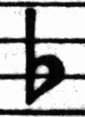 | 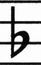 | |
| Bärenreiter (1950) | Henle (2000) |
When we wanted to write a computer program to create music typography, there were no musical fonts freely available that could match the elegance of our favorite scores. Undeterred, we created a font of musical symbols, relying on nice printouts of hand-engraved music. The experience helped develop a typographical taste, and it made us appreciate subtle design details. Without that experience, we would not have realized how ugly the fonts were that we admired at first.
Below is a sample of two music fonts: the upper set is the default font in the Sibelius software (the Opus font), and the lower set is our own LilyPond font.
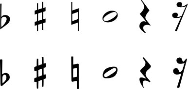
The LilyPond symbols are heavier and their weight is more consistent, which makes them easier to read. Fine endings, such as the ones on the sides of the quarter rest, should not end in sharp points, but rather in rounded shapes. This is because sharp corners of the punching dies are fragile and quickly wear out when stamping in metal. Taken together, the blackness of the font must be carefully tuned together with the thickness of lines, beams and slurs to give a strong yet balanced overall impression.
Also, notice that our half-note head is not elliptic but slightly diamond shaped. The vertical stem of a flat symbol is slightly brushed, becoming wider at the top. The sharp and the natural are easier to distinguish from a distance because their angled lines have different slopes and the vertical strokes are heavier.
| [ << Music engraving ] | [Top][Contents][Index][ ? ] | [ Literature list >> ] | ||
| [ < Music fonts ] | [ Up : Engraving details ] | [ Ledger lines > ] | ||
Optical spacing
In spacing, the distribution of space should reflect the durations between notes. However, as we saw in the Bach Suite above, many modern scores adhere to the durations with mathematical precision, which leads to poor results. In the next example a motif is printed twice: the first time using exact mathematical spacing, and the second with corrections. Which do you prefer?
Each bar in the fragment only uses notes that are played in a constant rhythm. The spacing should reflect that. Unfortunately, the eye deceives us a little; not only does it notice the distance between note heads, it also takes into account the distance between consecutive stems. As a result, the notes of an up-stem/down-stem combination should be put farther apart, and the notes of a down-stem/up-stem combination should be put closer together, all depending on the combined vertical positions of the notes. The lower two measures are printed with this correction, the upper two measures, however, form down-stem/up-stem clumps of notes. A master engraver would adjust the spacing as needed to please the eye.
The spacing algorithms in LilyPond even take the barlines into account, which is why the final up-stem in the properly spaced example has been given a little more space before the barline to keep it from looking crowded. A down-stem would not need this adjustment.
| [ << Music engraving ] | [Top][Contents][Index][ ? ] | [ Literature list >> ] | ||
| [ < Optical spacing ] | [ Up : Engraving details ] | [ Optical sizing > ] | ||
Ledger lines
Ledger lines present a typographical challenge: they make it more difficult to space musical symbols close together and they must be clear enough to identify the pitch at a glance. In the example below, we see that ledger lines should be thicker than normal staff lines and that an expert engraver will shorten a ledger line to allow closer spacing with accidentals. We have included this feature in LilyPond’s engraving.
 | 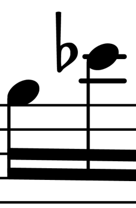 |
| [ << Music engraving ] | [Top][Contents][Index][ ? ] | [ Literature list >> ] | ||
| [ < Ledger lines ] | [ Up : Engraving details ] | [ Why work so hard? > ] | ||
Optical sizing
Music may need to be printed in a range of sizes. Originally, this was accomplished by creating punching dies in each of the required sizes, which meant that each die was designed to look its best at that size. With the advent of digital fonts, a single outline can be mathematically scaled to any size, which is very convenient, but at the smaller sizes the glyphs will appear very light.
In LilyPond, we have created fonts in a range of weights, corresponding to a range of music sizes. This is a LilyPond engraving at staff size 26:
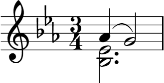
and this is the same engraving set at staff size 11, then magnified by 236% to print at the same size as the previous example:
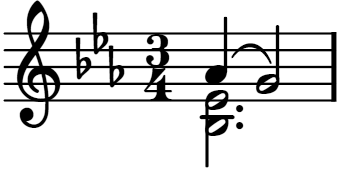
At smaller sizes, LilyPond uses proportionally heavier lines so the music will still read well.
| [ << Music engraving ] | [Top][Contents][Index][ ? ] | [ Literature list >> ] | ||
| [ < Optical sizing ] | [ Up : Engraving details ] | [ Automated engraving > ] | ||
Why work so hard?
Musicians are usually more absorbed with performing than with studying the looks of a piece of music, so nitpicking typographical details may seem academic. But it is not. Sheet music is performance material: everything is done to aid the musician in letting her perform better, and anything that is unclear or unpleasant to read is a hindrance.
Traditionally engraved music uses bold symbols on heavy staff to create a strong, well-balanced look that stands out well when the music is far away from the reader: for example, if it is on a music stand. A careful distribution of white space allows music to be set very tightly without crowding symbols together. The result minimizes the number of page turns, which is a great advantage.
This is a common characteristic of typography. Layout should be pretty, not only for its own sake, but especially because it helps the reader in his task. For sheet music this is of double importance because musicians have a limited amount of attention. The less attention they need for reading, the more they can focus on playing the music. In other words, better typography translates to better performances.
These examples demonstrate that music typography is an art that is subtle and complex, and that producing it requires considerable expertise, which musicians usually do not have. LilyPond is our effort to bring the graphical excellence of hand-engraved music to the computer age, and make it available to normal musicians. We have tuned our algorithms, font-designs, and program settings to produce prints that match the quality of the old editions we love to see and love to play from.
| [ << Music engraving ] | [Top][Contents][Index][ ? ] | [ Literature list >> ] | ||
| [ < Why work so hard? ] | [ Up : Music engraving ] | [ Beauty contests > ] | ||
1.3 Automated engraving
Here we describe what is required to create software that can mimic the layout of engraved scores: a method of describing good layouts to the computer and a lot of detailed comparisons with real engravings.
| Beauty contests | ||
| Improvement by benchmarking | ||
| Getting things right |
| [ << Music engraving ] | [Top][Contents][Index][ ? ] | [ Literature list >> ] | ||
| [ < Automated engraving ] | [ Up : Automated engraving ] | [ Improvement by benchmarking > ] | ||
Beauty contests
How do we actually make formatting decisions? In other words, which of the three configurations should we choose for the following slur?
![[image of music]](3e/lily-b1e70a53.png)
There are a few books on the art of music engraving available. Unfortunately, they contain simple rules of thumb and some examples. Such rules can be instructive, but they are a far cry from an algorithm that we could readily implement in a computer. Following the instructions from literature leads to algorithms with lots of hand-coded exceptions. Doing all this case analysis is a lot of work, and often not all cases are covered completely:

(Image source: Ted Ross, The Art of Music Engraving)
Rather than trying to write detailed layout rules for every possible scenario, we only have to describe the objectives well enough that LilyPond can judge the attractiveness of several alternatives. Then, for each possible configuration we compute an ugliness score and we choose the least ugly configuration.
For example, here are three possible slur configurations, and LilyPond has given each one a score in ‘ugly points’. The first example gets 15.39 points for grazing one of the noteheads:
![[image of music]](0a/lily-4b26313d.png)
The second one is nicer, but the slur doesn’t start or end on the note heads. It gets 1.71 points for the left side and 9.37 points for the right side, plus another 2 points because the slur ascends while the melody descends for a total of 13.08 ugly points:
![[image of music]](6c/lily-bacfac14.png)
The final slur gets 10.04 points for the gap on the right and 2 points for the upward slope, but it is the most attractive of the three configurations, so LilyPond selects this one:
![[image of music]](bb/lily-c49506a3.png)
This technique is quite general, and is used to make optimal decisions for beam configurations, ties and dots in chords, line breaks, and page breaks. The results of these decisions can be judged by comparison to real engravings.
| [ << Music engraving ] | [Top][Contents][Index][ ? ] | [ Literature list >> ] | ||
| [ < Beauty contests ] | [ Up : Automated engraving ] | [ Getting things right > ] | ||
Improvement by benchmarking
LilyPond’s output has improved gradually over time, and it continues to improve by comparing its output to hand-engraved scores.
For example, here is one line of a benchmark piece from a hand-engraved edition (Bärenreiter BA320):

and the same quotation as engraved by a very old version of LilyPond (version 1.4, May 2001):

The LilyPond 1.4 output is certainly readable, but close comparison with the hand-engraved score showed a lot of errors in the formatting details:

- there is too much space before the time signature
- the stems of the beamed notes are too long
- the second and fourth measures are too narrow
- the slur is awkward-looking
- the trill marks are too big
- the stems are too thin
(There were also two missing note heads, several missing editorial annotations, and an incorrect pitch!)
By adjusting the layout rules and font design, the output has improved considerably. Compare the same reference score and the output from the current version of LilyPond (2.16.2):
![[image of music]](64/lily-9356cf70.png)
The current output is not a clone of the reference edition, but it is much closer to publication quality that the earlier output.
| [ << Music engraving ] | [Top][Contents][Index][ ? ] | [ Literature list >> ] | ||
| [ < Improvement by benchmarking ] | [ Up : Automated engraving ] | [ Building software > ] | ||
Getting things right
We can also measure LilyPond’s ability to make music engraving decisions automatically by comparing LilyPond’s output to the output of a commercial software product. In this case we have chosen Finale 2008, which is one of the most popular commercial score writers, particularly in North America. Sibelius is its major rival and appears to be especially strong in the European market.
For our comparison we selected Bach’s Fugue in G minor from the Well-Tempered Clavier, Book I, BWV 861, whose opening subject is
![[image of music]](5a/lily-ec6edb7a.png)
We made our comparison by engraving the last seven measures of the piece (28–34) in Finale and LilyPond. This is the point in the piece where the subject returns in a three-part stretto and leads into the closing section. In the Finale version, we have resisted the temptation to make any adjustments to the default output because we are trying to show the things that each software package gets right without assistance. The only major edits that we made were adjusting the page size to match this essay and forcing the music onto two systems to make the comparison easier. By default Finale would have engraved two systems of three measures each and a final, full-width system containing a single measure.
Many of the differences between the two engravings are visible in measures 28–29, as shown here with Finale first and LilyPond second:

![[image of music]](8d/lily-780b6e15.png)
Some shortcomings in the unedited Finale output include:
- Most of the beams extend too far off the staff. A beam that points towards the center of the staff should have a length of about one octave, but engravers shorten this when the beam points away from the staff in multi-voice music. The Finale beaming can easily be improved with their Patterson Beams plug-in, but we elected to skip that step for this example.
- Finale doesn’t adjust the positions of interlocking note heads,
which makes the music extremely difficult to read when the upper and
lower voices exchange positions temporarily:
![[image of music]](bf/lily-96dec236.png)
- Finale has placed all of the rests at fixed heights on the staff. The user is free to adjust them as needed, but the software makes no attempt to consider the content of the other voice. As luck would have it, there are no true collisions between notes and rests in this example, but that has more to do with the positions of the notes than the rest. In other words, Bach deserves more credit for avoiding a complete collision than Finale does.
This example is not intended to suggest that Finale cannot be used to produce publication-quality output. On the contrary, in the hands of a skilled user it can and does, but it requires skill and time. One of the fundamental differences between LilyPond and commercial scorewriters is that LilyPond hopes to reduce the amount of human intervention to an absolute minimum, while other packages try to provide an attractive interface in which to make these types of edits.
One particularly glaring omission we found from Finale is a missing flat in measure 33:

The flat symbol is required to cancel out the natural in the same measure, but Finale misses it because it occurred in a different voice. So in addition to running a beaming plug-in and checking the spacing on the noteheads and rests, the user must also check each measure for cross-voice accidentals to avoid interrupting a rehearsal over an engraving error.
If you are interested in examining these examples in more detail, the full seven-measure excerpt can be found at the end of this essay along with four different published engravings. Close examination reveals that there is some acceptable variation among the hand-engravings, but that LilyPond compares reasonably well to that acceptable range. There are still some shortcomings in the LilyPond output, for example, it appears a bit too aggressive in shortening some of the stems, so there is room for further development and fine-tuning.
Of course, typography relies on human judgment of appearance, so people cannot be replaced completely. However, much of the dull work can be automated. If LilyPond solves most of the common situations correctly, this will be a huge improvement over existing software. Over the course of years, the software can be refined to do more and more things automatically, so manual overrides are less and less necessary. Where manual adjustments are needed, LilyPond’s structure has been designed with that flexibility in mind.
| [ << Music engraving ] | [Top][Contents][Index][ ? ] | [ Literature list >> ] | ||
| [ < Getting things right ] | [ Up : Music engraving ] | [ Music representation > ] | ||
1.4 Building software
This section describes some of the programming decisions that we made when designing LilyPond.
| Music representation | ||
| What symbols to engrave? | ||
| Flexible architecture |
| [ << Music engraving ] | [Top][Contents][Index][ ? ] | [ Literature list >> ] | ||
| [ < Building software ] | [ Up : Building software ] | [ What symbols to engrave? > ] | ||
Music representation
Ideally, the input format for any high-level formatting system is an abstract description of the content. In this case, that would be the music itself. This poses a formidable problem: how can we define what music really is? Instead of trying to find an answer, we have reversed the question. We write a program capable of producing sheet music, and adjust the format to be as lean as possible. When the format can no longer be trimmed down, by definition we are left with content itself. Our program serves as a formal definition of a music document.
The syntax is also the user-interface for LilyPond, hence it is easy to type:
{
c'4 d'8
}
to create a quarter note on middle C (C1) and an eighth note on the D above middle C (D1).
On a microscopic scale, such syntax is easy to use. On a larger scale, syntax also needs structure. How else can you enter complex pieces like symphonies and operas? The structure is formed by the concept of music expressions: by combining small fragments of music into larger ones, more complex music can be expressed. For example
f4
Simultaneous notes can be constructed by enclosing them with
<< and >>:
<<c4 d4 e4>>
This expression is put in sequence by enclosing it in curly braces
{ … }:
{ f4 <<c4 d4 e4>> }
The above is also an expression, and so it may be combined again
with another simultaneous expression (a half note) using
<<, \\, and >>:
<< g2 \\ { f4 <<c4 d4 e4>> } >>
Such recursive structures can be specified neatly and formally in a context-free grammar. The parsing code is also generated from this grammar. In other words, the syntax of LilyPond is clearly and unambiguously defined.
User-interfaces and syntax are what people see and deal with most. They are partly a matter of taste, and also the subject of much discussion. Although discussions on taste do have their merit, they are not very productive. In the larger picture of LilyPond, the importance of input syntax is small: inventing neat syntax is easy, while writing decent formatting code is much harder. This is also illustrated by the line-counts for the respective components: parsing and representation take up less than 10% of the source code.
When designing the structures used in LilyPond, we made some different decisions than are apparent in other software. Consider the hierarchical nature of music notation:
In this case, there are pitches grouped into chords that belong to measures, which belong to staves. This resembles a tidy structure of nested boxes:
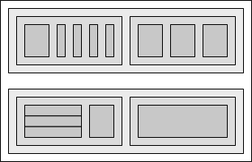
Unfortunately, the structure is tidy because it is based on some excessively restrictive assumptions. This becomes apparent if we consider a more complicated musical example:
In this example, staves start and stop at will, voices jump around between staves, and the staves have different time signatures. Many software packages would struggle with reproducing this example because they are built on the nested box structure. With LilyPond, on the other hand, we have tried to keep the input format and the structure as flexible as possible.
| [ << Music engraving ] | [Top][Contents][Index][ ? ] | [ Literature list >> ] | ||
| [ < Music representation ] | [ Up : Building software ] | [ Flexible architecture > ] | ||
What symbols to engrave?
The formatting process decides where to place symbols. However, this can only be done once it is decided what symbols should be printed – in other words, what notation to use.
Common music notation is a system of recording music that has evolved over the past 1000 years. The form that is now in common use dates from the early Renaissance. Although the basic form (i.e., note heads on a 5-line staff) has not changed, the details still evolve to express the innovations of contemporary notation. Hence, common music notation encompasses some 500 years of music. Its applications range from monophonic melodies to monstrous counterpoints for a large orchestra.
How can we get a grip on such a seven-headed beast, and force it
into the confines of a computer program? Our solution is to break
up the problem of notation (as opposed to engraving, i.e.,
typography) into digestible and programmable chunks: every type of
symbol is handled by a separate module, a so-called plug-in. Each
plug-in is completely modular and independent, so each can be
developed and improved separately. Such plug-ins are called
engravers, by analogy with craftsmen who translate musical
ideas to graphic symbols.
In the following example, we start out with a plug-in for note
heads, the Note_heads_engraver.
Then a Staff_symbol_engraver adds the staff,
the Clef_engraver defines a reference point for the staff,
and the Stem_engraver adds stems.
The Stem_engraver is notified of any note head coming
along. Every time one (or more, for a chord) note head is seen, a
stem object is created and connected to the note head. By adding
engravers for beams, slurs, accents, accidentals, bar lines, time
signature, and key signature, we get a complete piece of notation.
![[image of music]](52/lily-05260365.png)
This system works well for monophonic music, but what about polyphony? In polyphonic notation, many voices can share a staff.
In this situation, the accidentals and staff are shared, but the stems, slurs, beams, etc., are private to each voice. Hence, engravers should be grouped. The engravers for note heads, stems, slurs, etc., go into a group called ‘Voice context’, while the engravers for key, accidental, bar, etc., go into a group called ‘Staff context’. In the case of polyphony, a single Staff context contains more than one Voice context. Similarly, multiple Staff contexts can be put into a single Score context. The Score context is the top level notation context.
See also
Internals Reference: Contexts.
| [ << Music engraving ] | [Top][Contents][Index][ ? ] | [ Literature list >> ] | ||
| [ < What symbols to engrave? ] | [ Up : Building software ] | [ Putting LilyPond to work > ] | ||
Flexible architecture
When we started, we wrote the LilyPond program entirely in the C++ programming language; the program’s functionality was set in stone by the developers. That proved to be unsatisfactory for a number of reasons:
- When LilyPond makes mistakes, users need to override formatting decisions. Therefore, the user must have access to the formatting engine. Hence, rules and settings cannot be fixed by us at compile-time but must be accessible for users at run-time.
- Engraving is a matter of visual judgment, and therefore a matter of taste. As knowledgeable as we are, users can disagree with our personal decisions. Therefore, the definitions of typographical style must also be accessible to the user.
- Finally, we continually refine the formatting algorithms, so we need a flexible approach to rules. The C++ language forces a certain method of grouping rules that cannot readily be applied to formatting music notation.
These problems have been addressed by integrating an interpreter for the Scheme programming language and rewriting parts of LilyPond in Scheme. The current formatting architecture is built around the notion of graphical objects, described by Scheme variables and functions. This architecture encompasses formatting rules, typographical style and individual formatting decisions. The user has direct access to most of these controls.
Scheme variables control layout decisions. For example, many graphical objects have a direction variable that encodes the choice between up and down (or left and right). Here you see two chords, with accents and arpeggios. In the first chord, the graphical objects have all directions down (or left). The second chord has all directions up (right).
The process of formatting a score consists of reading and writing the variables of graphical objects. Some variables have a preset value. For example, the thickness of many lines – a characteristic of typographical style – is a variable with a preset value. You are free to alter this value, giving your score a different typographical impression.
Formatting rules are also preset variables: each object has variables containing procedures. These procedures perform the actual formatting, and by substituting different ones, we can change the appearance of objects. In the following example, the rule governing which note head objects are used to produce the note head symbol is changed during the music fragment.
| [ << Music engraving ] | [Top][Contents][Index][ ? ] | [ Literature list >> ] | ||
| [ < Flexible architecture ] | [ Up : Music engraving ] | [ Engraved examples (BWV 861) > ] | ||
1.5 Putting LilyPond to work
We have written LilyPond as an experiment of how to condense the art of music engraving into a computer program. Thanks to all that hard work, the program can now be used to perform useful tasks. The simplest application is printing notes.
![[image of music]](71/lily-4dcc4a41.png)
By adding chord names and lyrics we obtain a lead sheet.
![[image of music]](94/lily-5106ea2f.png)
Polyphonic notation and piano music can also be printed. The following example combines some more exotic constructs.
![[image of music]](71/lily-626d9ec7.png)
The fragments shown above have all been written by hand, but that is not a requirement. Since the formatting engine is mostly automatic, it can serve as an output means for other programs that manipulate music. For example, it can also be used to convert databases of musical fragments to images for use on websites and multimedia presentations.
This manual also shows an application: the input format is text, and can
therefore be easily embedded in other text-based formats such as
LaTeX, HTML, or in the case of this manual, Texinfo. Using the
lilypond-book program, included with LilyPond, the input
fragments can be replaced by music images in the resulting PDF or HTML
output files. Another example is the third-party OOoLilyPond extension
for OpenOffice.org, which makes it extremely easy to embed musical
examples in documents.
For more examples of LilyPond in action, full documentation, and the software itself, see our main website: www.lilypond.org.
| [ << Music engraving ] | [Top][Contents][Index][ ? ] | [ Literature list >> ] | ||
| [ < Putting LilyPond to work ] | [ Up : Music engraving ] | [ Literature list > ] | ||
1.6 Engraved examples (BWV 861)
This section contains four reference engravings and two software-engraved versions of Bach’s Fugue in G minor from the Well-Tempered Clavier, Book I, BWV 861 (the last seven measures).
Bärenreiter BA5070 (Neue Ausgabe Sämtlicher Werke, Serie V, Band 6.1, 1989):
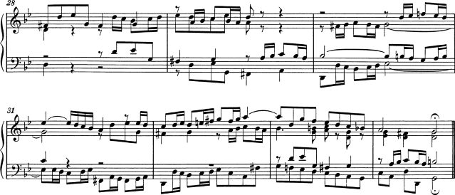Bärenreiter BA5070 (Neue Ausgabe Sämtlicher Werke, Serie V, Band 6.1, 1989), an alternate musical source. Aside from the textual differences, this demonstrates slight variations in the engraving decisions, even from the same publisher and edition:
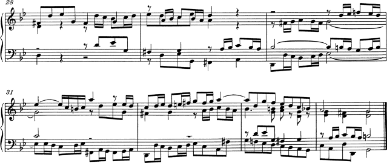Breitkopf & Härtel, edited by Ferruccio Busoni (Wiesbaden, 1894), also available from the Petrucci Music Library (IMSLP #22081). The editorial markings (fingerings, articulations, etc.) have been removed for clearer comparison with the other editions here:
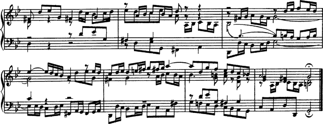Bach-Gesellschaft edition (Leipzig, 1866), available from the Petrucci Music Library (IMSPL #02221):
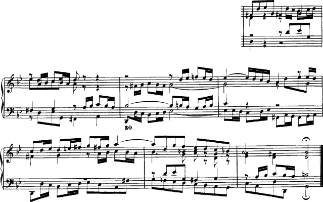Finale 2008:
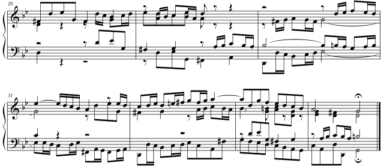LilyPond, version 2.16.2:
| [ << Music engraving ] | [Top][Contents][Index][ ? ] | [ GNU Free Documentation License >> ] | ||
| [ < Engraved examples (BWV 861) ] | [ Up : Top ] | [ Short literature list > ] | ||
2. Literature list
Here are lists of references used in LilyPond.
| 2.1 Short literature list | ||
| 2.2 Long literature list |
| [ << Literature list ] | [Top][Contents][Index][ ? ] | [ GNU Free Documentation License >> ] | ||
| [ < Literature list ] | [ Up : Literature list ] | [ Long literature list > ] | ||
2.1 Short literature list
If you need to know more about music notation, here are some interesting titles to read.
- Ignatzek 1995
Klaus Ignatzek, Die Jazzmethode für Klavier. Schott’s Söhne 1995. Mainz, Germany ISBN 3-7957-5140-3.
A tutorial introduction to playing Jazz on the piano. One of the first chapters contains an overview of chords in common use for Jazz music.
- Gerou 1996
-
Tom Gerou and Linda Lusk, Essential Dictionary of Music Notation. Alfred Publishing, Van Nuys CA ISBN 0-88284-768-6.
A concise, alphabetically ordered list of typesetting and music (notation) issues, covering most of the normal cases.
- Read 1968
Gardner Read, Music Notation: A Manual of Modern Practice. Taplinger Publishing, New York (2nd edition).
A standard work on music notation.
- Ross 1987
Ted Ross, Teach yourself the art of music engraving and processing. Hansen House, Miami, Florida 1987.
This book is about music engraving, i.e., professional typesetting. It contains directions on stamping, use of pens and notational conventions. The sections on reproduction technicalities and history are also interesting.
- Schirmer 2001
The G.Schirmer/AMP Manual of Style and Usage. G.Schirmer/AMP, NY, 2001. (This book can be ordered from the rental department.)
This manual specifically focuses on preparing print for publication by Schirmer. It discusses many details that are not in other, normal notation books. It also gives a good idea of what is necessary to bring printouts to publication quality.
- Stone 1980
-
Kurt Stone, Music Notation in the Twentieth Century. Norton, New York 1980.
This book describes music notation for modern serious music, but starts out with a thorough overview of existing traditional notation practices.
| [ << Literature list ] | [Top][Contents][Index][ ? ] | [ GNU Free Documentation License >> ] | ||
| [ < Short literature list ] | [ Up : Literature list ] | [ GNU Free Documentation License > ] | ||
2.2 Long literature list
University of Colorado Engraving music bibliography
- Willi Apel. The notation of polyphonic music, 900-1600. Cambridge, Mass, 1953. Musical notation.
- Ernest Austin. The Story of Music Printing. Lowe and Brydone Printers, Ltd., London. subject: history of music printing and engraving.
- Anna Maria Busse Berger. Mensuration and proportion signs : origins and evolution. Clarendon Press, Oxford, England, 1993. subject: early notation.
- Roger Bowers. Music & Letters, volume 73. August 1992. Some reflection upon notation and proportion in Monteverdi’s mass and vespers.
- Paul Brainard. Current Musicology. Number 50. July-Dec 1992. Proportional notation in the music of Schutz and his contemporaries in the 17th Century.
- Carl Brandt and Clinton Roemer. Standardized Chord Symbol Notation. Roerick Music Co., Sherman Oaks, CA. subject: musical notation.
- Earle Brown. Musical Quarterly, volume 72. Spring 1986. The notation and performance of new music.
- John Cage. Notations. Something Else Press, New York, 1969. Music, Manuscripts, Facsimiles. Facsimiles of holographs from the Foundation for Contemporary Performance Arts, with text by 269 composers, but rearranged using chance operations.,V).
- J Carter. New Paths in Book Collecting. London, 1934. subject: history of music printing and engraving.
- F. Chrsander. A Sketch of the HIstory of Music printing, from the 15th to the 16th century. 18??. subject: history of music printing and engraving.
- Henry Cowell. Our Inadequate Notation. Modern Music, 4(3), 1927. subject: 20th century notation.
- Henry Cowell. New Musical Resources. Alfred A. Knopf, Inc., New York, 1930. subject: 20th century notation.
- O.F. Deutsch. Music Publishers’ Numbers. London, 1946. subject: history of music printing and engraving.
- Suzanne Eggleston. Notes. New periodicals, 51(2):657(7), Dec 1994. A list of new music periodicals covering the period Jun.-Dec. 1994. Includes aims, formats and a description of the contents of each listed periodical. Includes Music Notation News.
- Hubert Foss. Music Printing. Practical Printing and Binding. Oldhams Press Ltd., Long Acre, London. subject: musical notation.
- Jean Charles Francois. Writing without representation, and unreadable notation.. Perspectives of New Music, 30(1):6(15), Winter 1992. subject: Modern music has outgrown notation. While the computer is used to write down music with accuracy never before achieved, the range of modern sounds has surpassed the relevance of the computer...
- David Fuller. The Journal of Musicology, volume 7. Winter 1989. Notes and inegales unjoined: defending a definition. (written-out inequalities in music notation).
- Virginia Gaburo. Notation. Lingua Press, La Jolla, California, 1977. A Lecture about notation, new ideas about.
- Keith A Hamel. A design for music editing and printing software based on notational syntax. Perspectives of New Music, 27(1):70(14), Winter 1989.
- Archibald Jacob. Musical handwriting : or, How to put music on paper : A handbook for all musicians, professional and amateur. Oxford University Press, London, 1947. subject: Musical notation.
- Harold M Johnson. How to write music manuscript an exercise-method handbook for the music student, copyist, arranger, composer, teacher. Carl Fischer, Inc., New York, 1946. subject: Musical notation –Handbooks, manuals.
- David Evan Jones. Perspectives of New Music. 1990. Speech extrapolated. (includes notation).
- H King. Four Hundred Years of Music Printing. London, 1964. subject: history of music printing and engraving.
- A.H King. The 50th Anniversary of Music Printing. 1973.
- O Kinkeldey. Music And Music Printing in Incunabula. Papers of the Bibliographical Society of America, xxvi:89-118, 1932. subject: history of music printing and engraving.
- D.W. Krummel. Graphic Analysis in Application to Early American Engraved Music. Notes, xvi:213, 9 1958. subject: history of music printing and engraving.
- D.W Krummel. Oblong Format in Early Music Books. The Library, 5th ser., xxvi:312, 1971. subject: history of music printing and engraving.
- Jeffrey Lependorf. ?. Perspectives of New Music, 27(2):232(20), Summer 1989. Contemporary notation for the shakuhachi: a primer for composers. (Tradition and Renewal in the Music of Japan).
- G.A Marco. The Earliest Music Printers of Continental Europe: a Checklist of Facsimiles Illustrating Their Work. Charlottesville, Virginia, 1962. subject: history of music printing and engraving.
- K. Meyer and J O’Meara. The Printing of Music, 1473-1934. The Dolphin, ii:171–207, 1935. subject: history of music printing and engraving.
- Raymond Monelle. Comparative Literature, volume 41. Summer 1989. Music notation and the poetic foot.
- A Novello. Some Account of the Methods of Musick Printing, with Specimens of the Various Sizes of Moveable Types and of Other Matters. London, 1847. subject: history of music printing and engraving.
- C.B Oldman. Collecting Musical First Editions. London, 1934. subject: history of music printing and engraving.
- Carl Parrish. The Notation of Medieval Music. Carl Fischer, Inc., New York, 1946. subject: early notation.
- Carl Parrish. The notation of medieval music. Norton, New York, 1957. Musical notation.
- Harry Patch. Genesis of a Music. University of Wisconsin Press, Madison, 1949. subject: early notation.
- B Pattison. Notes on Early Music Printing. The Library, xix:389-421, 1939. subject: history of music printing and engraving.
- Sandra Pinegar. Current Musicology. Number 53. July 1993. The seeds of notation and music paleography.
- Richard Rastall. The notation of Western music : an introduction. St. Martin’s Press, New York, N.Y., 1982. Musical notation.
- Richard Rastall. Music & Letters, volume 74. November 1993. Equal Temperament Music Notation: The Ailler-Brennink Chromatic Notation. Results and Conclusions of the Music Notation Refor by the Chroma Foundation (book reviews).
- Howard Risatti. New Music Vocabulary. University of Illinois Press, Urbana, Illinois, 1975. A Guide to Notational Signs for Contemporary Music.
- Donald W. Krummel \& Stanley Sadie. Music Printing & Publishing. Macmillan Press, 1990. subject: musical notation.
- Norman E Smith. Current Musicology. Number 45-47. Jan-Dec 1990. The notation of fractio modi.
- W Squire. Notes on Early Music Printing. Bibliographica, iii(99), 1897. subject: history of music printing and engraving.
- Robert Steele. The Earliest English Music Printing. London, 1903. subject: history of music printing and engraving.
- Willy Tappolet. La Notation Musicale. Neuchâtel, Paris, 1947. subject: general notation.
- Leo Treitler. The Journal of Musicology, volume 10. Spring 1992. The unwritten and written transmission, of medieval chant and the start-up of musical notation. Notational practice developed in medieval music to address the written tradition for chant which interacted with the unwritten vocal tradition.
- unknown author. Pictorial History of Music Printing. H. and A. Selmer, Inc., Elhardt, Indiana. subject: history of music printing and engraving.
- M.L West. Music & Letters, volume 75. May 1994. The Babylonian musical notation and the Hurrian melodic texts. A new way of deciphering the ancient Babylonian musical notation.
- C.F. Abdy Williams. The Story of Notation. Charles Scribner’s Sons, New York, 1903. subject: general notation.
- Emmanuel Wintermitz. Musical Autographs from Monteverdi to Hindemith. Princeton University Press, Princeton, 1955. subject: history of music printing and engraving.
Computer notation bibliography
- G. Assayaag and D. Timis. A Toolbox for music notation. In Proceedings of the 1986 International Computer Music Conference, 1986.
- M. Balaban. A Music Workstation Based on Multiple Hierarchical Views of Music. San Francisco, In Proceedings of the 1988 International Computer Music Conference, 1988.
- Alan Belkin. Macintosh Notation Software: Present and Future. Computer Music Journal, 18(1), 1994. Some music notation systems are analysed for ease of use, MIDI handling. The article ends with a plea for a standard notation format. HWN.
- Herbert Bielawa. Review of Sibelius 7. Computer Music Journal, 1993?. A raving review/tutorial of Sibelius 7 for Acorn. (And did they seriously program a RISC chip in ... assembler ?!) HWN.
- Dorothea Blostein and Lippold Haken. Justification of Printed Music. Communications of the ACM, J34(3):88-99, March 1991. This paper provides a overview of the algorithm used in LIME for spacing individual lines. HWN.
- Dorothea Blostein and Lippold Haken. The Lime Music Editor: A Diagram Editor Involving Complex Translations. Software Practice and Experience, 24(3):289–306, march 1994. A description of various conversions, decisions and issues relating to this interactive editor HWN.
- Nabil Bouzaiene, Loïc Le Gall, and Emmanuel Saint-James. Une bibliothèque pour la notation musicale baroque. LNCS. In EP ’98, 1998. Describes ATYS, an extension to Berlioz, that can mimick handwritten baroque style beams.
- Donald Byrd. A System for Music Printing by Computer. Computers and the Humanities, 8:161-72, 1974.
- Donald Byrd. Music Notation by Computer. PhD thesis, Indiana University, 1985. Describes the SMUT (sic) system for automated music printout.
- Donald Byrd. Music Notation Software and Intelligence. Computer Music Journal, 18(1):17–20, 1994. Byrd (author of Nightingale) shows four problematic fragments of notation, and rants about notation programs that try to exhibit intelligent behaviour. HWN.
- Walter B Hewlett and Eleanor Selfridge-Field. Directory of Computer Assisted Research in Musicology. . Annual editions since 1985, many containing surveys of music typesetting technology. SP.
- Alyssa Lamb. The University of Colorado Music Engraving page. 1996. Webpages about engraving (designed with finale users in mind) (sic) HWN.
- Roger B. Dannenberg. Music Representation: Issues, Techniques, and Systems. Computer Music Journal, 17(3), 1993. This article points to some problems and solutions with music representation. HWN.
- Michael Droettboom. Study of music Notation Description Languages. Technical Report, 2000. GUIDO and lilypond compared. LilyPond wins on practical issues as usability and availability of tools, GUIDO wins on implementation simplicity.
- R. F. Ericson. The DARMS Project: A status report. Computing in the humanities, 9(6):291–298, 1975. Gourlay [gourlay86] writes: A discussion of the design and potential uses of the DARMS music-description language.
- H.S. Field-Richards. Cadenza: A Music Description Language. Computer Music Journal, 17(4), 1993. A description through examples of a music entry language. Apparently it has no formal semantics. There is also no implementation of notation convertor. HWN.
- Miguel Filgueiras. Some Music Typesetting Algorithms. .
- Miguel Filgueiras and José Paulo Leal. Representation and manipulation of music documents in SceX. Electronic Publishing, 6(4):507–518, 1993.
- Miguel Filgueiras. Implementing a Symbolic Music Processing System. 1996.
- Eric Foxley. Music — A language for typesetting music scores. Software — Practice and Experience, 17(8):485-502, 1987. A paper on a simple TROFF preprocessor to typeset music.
- Loïc Le Gall. Création d’une police adaptée à la notation musicale baroque. Master’s thesis, École Estienne, 1997.
- Martin Gieseking. Code-basierte Generierung interaktiver Notengraphik. PhD thesis, Universität Osnabrück, 2001.
- David A. Gomberg. A Computer-Oriented System for Music Printing. PhD thesis, Washington University, 1975.
- David A. Gomberg. A Computer-oriented System for Music Printing. Computing and the Humanities, 11:63-80, march 1977. Gourlay [gourlay86] writes: "A discussion of the problems of representing the conventions of musical notation in computer algorithms.".
- John. S. Gourlay. A language for music printing. Communications of the ACM, 29(5):388–401, 1986. This paper describes the MusiCopy musicsetting system and an input language to go with it.
- John S. Gourlay, A. Parrish, D. Roush, F. Sola, and Y. Tien. Computer Formatting of Music. Technical Report OSU-CISRC-2/87-TR3, Department of Computer and Information Science, The Ohio State University, 1987. This paper discusses the development of algorithms for the formatting of musical scores (from abstract). It also appeared at PROTEXT III, Ireland 1986.
- John S. Gourlay. Spacing a Line of Music,. Technical Report OSU-CISRC-10/87-TR35, Department of Computer and Information Science, The Ohio State University, 1987.
- John Grøver. A computer-oriented description of Music Notation. Part III: Accidental Positioning. Technical Report 135, Department of informatics, University of Oslo, 1989. Placement of accidentals crystallised in an enormous set of rules. Same remarks as for [grover89-twovoices] applies.
- John Grøver. A computer-oriented description of Music Notation. Part I. The Symbol Inventory. Technical Report 133, Department of informatics, University of Oslo, 1989. The goal of this series of reports is a full description of music formatting. As these largely depend on parameters of fonts, it starts with a verbose description of music symbols. The subject is treated backwards: from general rules of typesetting the author tries to extract dimensions for characters, whereas the rules of typesetting (in a particular font) follow from the dimensions of the symbols. His symbols do not match (the stringent) constraints formulated by eg. [wanske].
- John Grøver. A computer-oriented description of Music Notation. Part II: Two Voice Sharing a Staff, Leger Line Rules, Dot Positioning. Technical Report 134, Department of informatics, University of Oslo, 1989. A lot rules for what is in the title are formulated. The descriptions are long and verbose. The verbosity shows that formulating specific rules is not the proper way to approach the problem. Instead, the formulated rules should follow from more general rules, similar to [parrish87-simultaneities].
- Lippold Haken and Dorothea Blostein. The Tilia Music Representation: Extensibility, Abstraction, and Notation Contexts for the Lime Music Editor. Computer Music Journal, 17(3):43–58, 1993.
- Lippold Haken and Dorothea Blostein. A New Algorithm for Horizontal Spacing of Printed Music. Banff, In International Computer Music Conference, pages 118-119, Sept 1995. This describes an algorithm which uses springs between adjacent columns.
- Wael A. Hegazy. On the Implementation of the MusiCopy Language Processor,. Technical Report OSU-CISRC-10/87-TR34, Department of Computer and Information Science, The Ohio State University, 1987. Describes the "parser" which converts MusiCopy MDL to MusiCopy Simultaneities and columns. MDL is short for Music Description Language [gourlay86]. It accepts music descriptions that are organised into measures filled with voices, which are filled with notes. The measures can be arranged simultaneously or sequentially. To address the 2-dimensionality, almost all constructs in MDL must be labeled. MDL uses begin/end markers for attribute values and spanners. Rightfully the author concludes that MusiCopy must administrate a "state" variable containing both properties and current spanning symbols. MusiCopy attaches graphic information to the objects constructed in the input: the elements of the input are partially complete graphic objects.
- Wael A. Hegazy and John S. Gourlay. Optimal line breaking in music. Technical Report OSU-CISRC-8/87-TR33, Department of Computer and Information Science, The Ohio State University,, 1987.
- Wael A. Hegazy and John S. Gourlay. (J. C. van Vliet, editor). Optimal line breaking in music. Cambridge University Press, In Proceedings of the International Conference on Electronic Publishing, Document Manipulation and Typography. Nice (France), April 1988.
- Walter B. Hewlett and Eleanor Selfridge-Field, editors. The Virtual Score; representation, retrieval and restoration. Computing in Musicology. MIT Press, 2001.
- H. H. Hoos, K. A. Hamel, K. Renz, and J. Kilian. The GUIDO Music Notation Format—A Novel Approach for Adequately Representing Score-level Music. In Proceedings of International Computer Music Conference, pages 451–454, 1998.
- Peter S. Langston. Unix music tools at Bellcore. Software — Practice and Experience, 20(S1):47–61, 1990. This paper deals with some command-line tools for music editing and playback.
- Dominique Montel. La gravure de la musique, lisibilité esthétique, respect de l’oevre. Lyon, In Musique \& Notations, 1997.
- Giovanni Müller. Interaktive Bearbeitung konventioneller Musiknotation. PhD thesis, Eidgenössische Technische Hochschule Zürich, 1990. This is about engraver-quality typesetting with computers. It accepts the axiom that notation is too difficult to generate automatically. The result is that a notation program should be a WYSIWYG editor that allows one to tweak everything.
- Han Wen Nienhuys and Jan Nieuwenhuizen. LilyPond, a system for automated music engraving. Firenze, In XIV Colloquium on Musical Informatics, pages 167–172, May 2003.
- Cindy Grande. NIFF6a Notation Interchange File Format. Grande Software Inc., 1995. Specs for NIFF, a reasonably comprehensive but binary format for notation HWN.
- Severo M. Ornstein and John Turner Maxwell III. Mockingbird: A Composer’s Amanuensis. Technical Report CSL-83-2, Xerox Palo Alto Research Center, 3333 Coyote Hill Road, Palo Alto, CA, 94304, January 1983.
- Severo M. Ornstein and John Turner Maxwell III. Mockingbird: A Composer’s Amanuensis. Byte, 9, January 1984. A discussion of an interactive and graphical computer system for music composition.
- Stephen Dowland Page. Computer Tools for Music Information Retrieval. PhD thesis, Dissertation University of Oxford, 1988. Don’t ask Stephen for a copy. Write to the Bodleian Library, Oxford, or to the British Library, instead. SP.
- Allen Parish, Wael A. Hegazy, John S. Gourlay, Dean K. Roush, and F. Javier Sola. MusiCopy: An automated Music Formatting System. Technical Report, 1987.
- A. Parrish and John S. Gourlay. Computer Formatting of Musical Simultaneities,. Technical Report OSU-CISRC-10/87-TR28, Department of Computer and Information Science, The Ohio State University, 1987. This note discusses placement of balls, stems, dots which occur at the same moment ("Simultaneity").
- Steven Powell. Music engraving today. Brichtmark, 2002. A "How Steven uses Finale" manual.
- Gary M. Rader. Creating Printed Music Automatically. Computer, 29(6):61–69, June 1996. Describes a system called MusicEase, and explains that it uses "constraints" (which go unexplained) to automatically position various elements.
- Kai Renz. Algorithms and data structures for a music notation system based on GUIDO music notation. PhD thesis, Universität Darmstadt, 2002.
- René Roelofs. Een Geautomatiseerd Systeem voor het Afdrukken van Muziek. Number 45327. Master’s thesis, Erasmus Universiteit Rotterdam, 1991. This dutch thesis describes a monophonic typesetting system, and focuses on the breaking algorithm, which is taken from Hegazy & Gourlay.
- Joseph Rothstein. Review of Passport Designs’ Encore Music Notation Software. Computer Music Journal, ?.
- Dean K. Roush. Using MusiCopy. Technical Report OSU-CISRC-18/87-TR31, Department of Computer and Information Science, The Ohio State University, 1987. User manual of MusiCopy.
- D. Roush. Music Formatting Guidelines. Technical Report OSU-CISRC-3/88-TR10, Department of Computer and Information Science, The Ohio State University, 1988. Rules on formatting music formulated for use in computers. Mainly distilled from [Ross] HWN.
- Eleanor Selfridge-Field, editor. Beyond MIDI: the handbook of musical codes. MIT Press, 1997. A description of various music interchange formats.
- Donald Sloan. Aspects of Music Representation in HyTime/SMDL. Computer Music Journal, 17(4), 1993. An introduction into HyTime and its score description variant SMDL. With a short example that is quite lengthy in SMDL.
- International Organization for Standardization~(ISO). Information Technology - Document Description and Processing Languages - Standard Music Description Language (SMDL). Number ISO/IEC DIS 10743. 1992.
- Leland Smith. Editing and Printing Music by Computer, volume 17. 1973. Gourlay [gourlay86] writes: A discussion of Smith’s music-printing system SCORE.
- F. Sola. Computer Design of Musical Slurs, Ties and Phrase Marks,. Technical Report OSU-CISRC-10/87-TR32, Department of Computer and Information Science, The Ohio State University, 1987. Overview of a procedure for generating slurs.
- F. Sola and D. Roush. Design of Musical Beams,. Technical Report OSU-CISRC-10/87-TR30, Department of Computer and Information Science, The Ohio State University, 1987. Calculating beam slopes HWN.
- Howard Wright. how to read and write tab: a guide to tab notation. . FAQ (with answers) about TAB, the ASCII variant of Tablature. HWN.
- Geraint Wiggins, Eduardo Miranda, Alaaaan Smaill, and Mitch Harris. A Framework for the evaluation of music representation systems. Computer Music Journal, 17(3), 1993. A categorisation of music representation systems (languages, OO systems etc) split into high level and low level expressiveness. The discussion of Charm and parallel processing for music representation is rather vague. HWN.
Engraving bibliography
- Harald Banter. Akkord Lexikon. Schott’s Söhne, Mainz, Germany, 1987. Comprehensive overview of commonly used chords. Suggests (and uses) a unification for all different kinds of chord names.
- A Barksdale. The Printed Note: 500 Years of Music Printing and Engraving. The Toledo Museum of Art, Toledo, Ohio, January 1957. ‘The exhibition "The Printed Note" attempts to show the various processes used since the second of the 15th century for reproducing music mechanically ... ’. The illustration mostly feature ancient music.
- Laszlo Boehm. Modern Music Notation. G. Schirmer, Inc., New York, 1961. Heussenstamm writes: A handy compact reference book in basic notation.
- H. Elliot Button. System in Musical Notation. Novello and co., London, 1920.
- Herbert Chlapik. Die Praxis des Notengraphikers. Doblinger, 1987. An clearly written book for the casually interested reader. It shows some of the conventions and difficulties in printing music HWN.
- Anthony Donato. Preparing Music Manuscript. Prentice-Hall, Englewood Cliffs, NJ, 1963.
- Donemus. Uitgeven van muziek. Donemus Amsterdam, 1982. Manual on copying for composers and copyists at the Dutch publishing house Donemus. Besides general comments on copying, it also contains a lot of hands-on advice for making performance material for modern pieces.
- William Gamble. Music Engraving and printing. Historical and Technical Treatise. Sir Isaac Pitman & Sons, ltd., 1923. This patriotic book was an attempt to promote and help British music engravers. It is somewhat similar to Hader’s book [hader48] in scope and style, but Gamble focuses more on technical details (Which French punch cutters are worth buying from, etc.), and does not treat typographical details, such as optical illusions. It is available as reprint from Da Capo Press, New York (1971).
- Tom Gerou and Linda Lusk. Essential Dictionary of Music Notation. Alfred Publishing, Van Nuys CA, 1996. A cheap, concise, alphabetically ordered list of typesetting and music (notation) issues with a rather simplistic attitude but in most cases "good-enough" answers JCN.
- Karl Hader. Aus der Werkstatt eines Notenstechers. Waldheim–Eberle Verlag, Vienna, 1948. Hader was a chief-engraver in a Viennese engraving workshop. This beautiful booklet was intended as an introduction for laymen on the art of engraving. It contains a step by step, in-depth explanation of how to cut and stamp music into zinc plates. It also contains a few compactly formulated rules on musical orthography. Out of print.
- George Heussenstamm. The Norton Manual of Music Notation. Norton, New York, 1987. Hands-on instruction book for copying (ie. handwriting) music. Fairly complete. HWN.
- Klaus Ignatzek. Die Jazzmethode für Klavier 1. Schott, 1995. This book contains a system for denoting chords that is used in LilyPond.
- Andreas Jaschinski, editor. Notation. Number BVK1625. Bärenreiter Verlag, 2000.
- Harold Johnson. How to write music manuscript. Carl Fischer, Inc., New York, 1946.
- Erdhard Karkoshka. Notation in New Music; a critical guide to interpretation and realisation. Praeger Publishers, New York, 1972. (Out of print).
- Mark Mc Grain. Music notation. Hal Leonard Publishing Corporation, 1991. HWN writes: ‘Book’ edition of lecture notes from XXX school of music. The book looks like it is xeroxed from bad printouts. The content has nothing you won’t find in other books like [read] or [heussenstamm].
- mpa. Standard music notation specifications for computer programming.. MPA, December 1996. Pamphlet explaining a few fine points in music font design HWN.
- Richard Rastall. The Notation of Western Music: an Introduction. J. M. Dent \& Sons London, 1983. Interesting account of the evolution and origin of common notation starting from neumes, and ending with modern innovations HWN.
- Gardner Read. Modern Rhythmic Notation. Indiana University Press, 1978. Sound (boring) review of the various hairy rhythmic notations used by avant-garde composers HWN.
- Gardner Read. Music Notation: a Manual of Modern Practice. Taplinger Publishing, New York, 1979. This is as close to the “standard” reference work for music notation issues as one is likely to get.
- Clinton Roemer. The Art of Music Copying. Roerick music co., Sherman Oaks (CA), 2nd edition, 1984. Out of print. Heussenstamm writes: an instructional manual which specializes in methods used in the commercial field.
- Glen Rosecrans. Music Notation Primer. Passantino, New York, 1979. Heussenstamm writes: Limited in scope, similar to [Roemer84].
- Carl A Rosenthal. A Practical Guide to Music Notation. MCA Music, New York, 1967. Heussenstamm writes: Informative in terms of traditional notation. Does not concern score preparation.
- Ted Ross. Teach yourself the art of music engraving and processing. Hansen House, Miami, Florida, 1987.
- Schirmer. The G. Schirmer Manual of Style and Usage. The G. Schirmer Publications Department, New York, 2001. This is the style guide for Schirmer publications. This manual specifically focuses on preparing print for publication by Schirmer. It discusses many details that are not in other, normal notation books. It also gives a good idea of what is necessary to bring printouts to publication quality. It can be ordered from the rental department.
- Kurt Stone. Music Notation in the Twentieth Century. Norton, New York, 1980. Heussenstamm writes: The most important book on notation in recent years.
- Börje Tyboni. Noter Handbok I Traditionell Notering. Gehrmans Musikförlag, Stockholm, 1994. Swedish book on music notation.
- Albert C. Vinci. Fundamentals of Traditional Music Notation. Kent State University Press, 1989.
- Helene Wanske. Musiknotation — Von der Syntax des Notenstichs zum EDV-gesteuerten Notensatz. Schott-Verlag, Mainz, 1988.
- Maxwell Weaner and Walter Boelke. Standard Music Notation Practice. Music Publisher’s Association of the United States Inc, New York, 1993.
- Johannes Wolf. Handbuch der Notationskunde. Breitkopf & Hartel, Leipzig, 1919. Very thorough treatment (in two volumes) of the history of music notation.
| [ << Literature list ] | [Top][Contents][Index][ ? ] | [ LilyPond index >> ] | ||
| [ < Long literature list ] | [ Up : Top ] | [ LilyPond index > ] | ||
A. GNU Free Documentation License
Version 1.3, 3 November 2008
Copyright © 2000, 2001, 2002, 2007, 2008 Free Software Foundation, Inc. http://fsf.org/ Everyone is permitted to copy and distribute verbatim copies of this license document, but changing it is not allowed. |
-
PREAMBLE
The purpose of this License is to make a manual, textbook, or other functional and useful document free in the sense of freedom: to assure everyone the effective freedom to copy and redistribute it, with or without modifying it, either commercially or noncommercially. Secondarily, this License preserves for the author and publisher a way to get credit for their work, while not being considered responsible for modifications made by others.
This License is a kind of “copyleft”, which means that derivative works of the document must themselves be free in the same sense. It complements the GNU General Public License, which is a copyleft license designed for free software.
We have designed this License in order to use it for manuals for free software, because free software needs free documentation: a free program should come with manuals providing the same freedoms that the software does. But this License is not limited to software manuals; it can be used for any textual work, regardless of subject matter or whether it is published as a printed book. We recommend this License principally for works whose purpose is instruction or reference.
-
APPLICABILITY AND DEFINITIONS
This License applies to any manual or other work, in any medium, that contains a notice placed by the copyright holder saying it can be distributed under the terms of this License. Such a notice grants a world-wide, royalty-free license, unlimited in duration, to use that work under the conditions stated herein. The “Document”, below, refers to any such manual or work. Any member of the public is a licensee, and is addressed as “you”. You accept the license if you copy, modify or distribute the work in a way requiring permission under copyright law.
A “Modified Version” of the Document means any work containing the Document or a portion of it, either copied verbatim, or with modifications and/or translated into another language.
A “Secondary Section” is a named appendix or a front-matter section of the Document that deals exclusively with the relationship of the publishers or authors of the Document to the Document’s overall subject (or to related matters) and contains nothing that could fall directly within that overall subject. (Thus, if the Document is in part a textbook of mathematics, a Secondary Section may not explain any mathematics.) The relationship could be a matter of historical connection with the subject or with related matters, or of legal, commercial, philosophical, ethical or political position regarding them.
The “Invariant Sections” are certain Secondary Sections whose titles are designated, as being those of Invariant Sections, in the notice that says that the Document is released under this License. If a section does not fit the above definition of Secondary then it is not allowed to be designated as Invariant. The Document may contain zero Invariant Sections. If the Document does not identify any Invariant Sections then there are none.
The “Cover Texts” are certain short passages of text that are listed, as Front-Cover Texts or Back-Cover Texts, in the notice that says that the Document is released under this License. A Front-Cover Text may be at most 5 words, and a Back-Cover Text may be at most 25 words.
A “Transparent” copy of the Document means a machine-readable copy, represented in a format whose specification is available to the general public, that is suitable for revising the document straightforwardly with generic text editors or (for images composed of pixels) generic paint programs or (for drawings) some widely available drawing editor, and that is suitable for input to text formatters or for automatic translation to a variety of formats suitable for input to text formatters. A copy made in an otherwise Transparent file format whose markup, or absence of markup, has been arranged to thwart or discourage subsequent modification by readers is not Transparent. An image format is not Transparent if used for any substantial amount of text. A copy that is not “Transparent” is called “Opaque”.
Examples of suitable formats for Transparent copies include plain ASCII without markup, Texinfo input format, LaTeX input format, SGML or XML using a publicly available DTD, and standard-conforming simple HTML, PostScript or PDF designed for human modification. Examples of transparent image formats include PNG, XCF and JPG. Opaque formats include proprietary formats that can be read and edited only by proprietary word processors, SGML or XML for which the DTD and/or processing tools are not generally available, and the machine-generated HTML, PostScript or PDF produced by some word processors for output purposes only.
The “Title Page” means, for a printed book, the title page itself, plus such following pages as are needed to hold, legibly, the material this License requires to appear in the title page. For works in formats which do not have any title page as such, “Title Page” means the text near the most prominent appearance of the work’s title, preceding the beginning of the body of the text.
The “publisher” means any person or entity that distributes copies of the Document to the public.
A section “Entitled XYZ” means a named subunit of the Document whose title either is precisely XYZ or contains XYZ in parentheses following text that translates XYZ in another language. (Here XYZ stands for a specific section name mentioned below, such as “Acknowledgements”, “Dedications”, “Endorsements”, or “History”.) To “Preserve the Title” of such a section when you modify the Document means that it remains a section “Entitled XYZ” according to this definition.
The Document may include Warranty Disclaimers next to the notice which states that this License applies to the Document. These Warranty Disclaimers are considered to be included by reference in this License, but only as regards disclaiming warranties: any other implication that these Warranty Disclaimers may have is void and has no effect on the meaning of this License.
-
VERBATIM COPYING
You may copy and distribute the Document in any medium, either commercially or noncommercially, provided that this License, the copyright notices, and the license notice saying this License applies to the Document are reproduced in all copies, and that you add no other conditions whatsoever to those of this License. You may not use technical measures to obstruct or control the reading or further copying of the copies you make or distribute. However, you may accept compensation in exchange for copies. If you distribute a large enough number of copies you must also follow the conditions in section 3.
You may also lend copies, under the same conditions stated above, and you may publicly display copies.
-
COPYING IN QUANTITY
If you publish printed copies (or copies in media that commonly have printed covers) of the Document, numbering more than 100, and the Document’s license notice requires Cover Texts, you must enclose the copies in covers that carry, clearly and legibly, all these Cover Texts: Front-Cover Texts on the front cover, and Back-Cover Texts on the back cover. Both covers must also clearly and legibly identify you as the publisher of these copies. The front cover must present the full title with all words of the title equally prominent and visible. You may add other material on the covers in addition. Copying with changes limited to the covers, as long as they preserve the title of the Document and satisfy these conditions, can be treated as verbatim copying in other respects.
If the required texts for either cover are too voluminous to fit legibly, you should put the first ones listed (as many as fit reasonably) on the actual cover, and continue the rest onto adjacent pages.
If you publish or distribute Opaque copies of the Document numbering more than 100, you must either include a machine-readable Transparent copy along with each Opaque copy, or state in or with each Opaque copy a computer-network location from which the general network-using public has access to download using public-standard network protocols a complete Transparent copy of the Document, free of added material. If you use the latter option, you must take reasonably prudent steps, when you begin distribution of Opaque copies in quantity, to ensure that this Transparent copy will remain thus accessible at the stated location until at least one year after the last time you distribute an Opaque copy (directly or through your agents or retailers) of that edition to the public.
It is requested, but not required, that you contact the authors of the Document well before redistributing any large number of copies, to give them a chance to provide you with an updated version of the Document.
-
MODIFICATIONS
You may copy and distribute a Modified Version of the Document under the conditions of sections 2 and 3 above, provided that you release the Modified Version under precisely this License, with the Modified Version filling the role of the Document, thus licensing distribution and modification of the Modified Version to whoever possesses a copy of it. In addition, you must do these things in the Modified Version:
- Use in the Title Page (and on the covers, if any) a title distinct from that of the Document, and from those of previous versions (which should, if there were any, be listed in the History section of the Document). You may use the same title as a previous version if the original publisher of that version gives permission.
- List on the Title Page, as authors, one or more persons or entities responsible for authorship of the modifications in the Modified Version, together with at least five of the principal authors of the Document (all of its principal authors, if it has fewer than five), unless they release you from this requirement.
- State on the Title page the name of the publisher of the Modified Version, as the publisher.
- Preserve all the copyright notices of the Document.
- Add an appropriate copyright notice for your modifications adjacent to the other copyright notices.
- Include, immediately after the copyright notices, a license notice giving the public permission to use the Modified Version under the terms of this License, in the form shown in the Addendum below.
- Preserve in that license notice the full lists of Invariant Sections and required Cover Texts given in the Document’s license notice.
- Include an unaltered copy of this License.
- Preserve the section Entitled “History”, Preserve its Title, and add to it an item stating at least the title, year, new authors, and publisher of the Modified Version as given on the Title Page. If there is no section Entitled “History” in the Document, create one stating the title, year, authors, and publisher of the Document as given on its Title Page, then add an item describing the Modified Version as stated in the previous sentence.
- Preserve the network location, if any, given in the Document for public access to a Transparent copy of the Document, and likewise the network locations given in the Document for previous versions it was based on. These may be placed in the “History” section. You may omit a network location for a work that was published at least four years before the Document itself, or if the original publisher of the version it refers to gives permission.
- For any section Entitled “Acknowledgements” or “Dedications”, Preserve the Title of the section, and preserve in the section all the substance and tone of each of the contributor acknowledgements and/or dedications given therein.
- Preserve all the Invariant Sections of the Document, unaltered in their text and in their titles. Section numbers or the equivalent are not considered part of the section titles.
- Delete any section Entitled “Endorsements”. Such a section may not be included in the Modified Version.
- Do not retitle any existing section to be Entitled “Endorsements” or to conflict in title with any Invariant Section.
- Preserve any Warranty Disclaimers.
If the Modified Version includes new front-matter sections or appendices that qualify as Secondary Sections and contain no material copied from the Document, you may at your option designate some or all of these sections as invariant. To do this, add their titles to the list of Invariant Sections in the Modified Version’s license notice. These titles must be distinct from any other section titles.
You may add a section Entitled “Endorsements”, provided it contains nothing but endorsements of your Modified Version by various parties—for example, statements of peer review or that the text has been approved by an organization as the authoritative definition of a standard.
You may add a passage of up to five words as a Front-Cover Text, and a passage of up to 25 words as a Back-Cover Text, to the end of the list of Cover Texts in the Modified Version. Only one passage of Front-Cover Text and one of Back-Cover Text may be added by (or through arrangements made by) any one entity. If the Document already includes a cover text for the same cover, previously added by you or by arrangement made by the same entity you are acting on behalf of, you may not add another; but you may replace the old one, on explicit permission from the previous publisher that added the old one.
The author(s) and publisher(s) of the Document do not by this License give permission to use their names for publicity for or to assert or imply endorsement of any Modified Version.
-
COMBINING DOCUMENTS
You may combine the Document with other documents released under this License, under the terms defined in section 4 above for modified versions, provided that you include in the combination all of the Invariant Sections of all of the original documents, unmodified, and list them all as Invariant Sections of your combined work in its license notice, and that you preserve all their Warranty Disclaimers.
The combined work need only contain one copy of this License, and multiple identical Invariant Sections may be replaced with a single copy. If there are multiple Invariant Sections with the same name but different contents, make the title of each such section unique by adding at the end of it, in parentheses, the name of the original author or publisher of that section if known, or else a unique number. Make the same adjustment to the section titles in the list of Invariant Sections in the license notice of the combined work.
In the combination, you must combine any sections Entitled “History” in the various original documents, forming one section Entitled “History”; likewise combine any sections Entitled “Acknowledgements”, and any sections Entitled “Dedications”. You must delete all sections Entitled “Endorsements.”
-
COLLECTIONS OF DOCUMENTS
You may make a collection consisting of the Document and other documents released under this License, and replace the individual copies of this License in the various documents with a single copy that is included in the collection, provided that you follow the rules of this License for verbatim copying of each of the documents in all other respects.
You may extract a single document from such a collection, and distribute it individually under this License, provided you insert a copy of this License into the extracted document, and follow this License in all other respects regarding verbatim copying of that document.
-
AGGREGATION WITH INDEPENDENT WORKS
A compilation of the Document or its derivatives with other separate and independent documents or works, in or on a volume of a storage or distribution medium, is called an “aggregate” if the copyright resulting from the compilation is not used to limit the legal rights of the compilation’s users beyond what the individual works permit. When the Document is included in an aggregate, this License does not apply to the other works in the aggregate which are not themselves derivative works of the Document.
If the Cover Text requirement of section 3 is applicable to these copies of the Document, then if the Document is less than one half of the entire aggregate, the Document’s Cover Texts may be placed on covers that bracket the Document within the aggregate, or the electronic equivalent of covers if the Document is in electronic form. Otherwise they must appear on printed covers that bracket the whole aggregate.
-
TRANSLATION
Translation is considered a kind of modification, so you may distribute translations of the Document under the terms of section 4. Replacing Invariant Sections with translations requires special permission from their copyright holders, but you may include translations of some or all Invariant Sections in addition to the original versions of these Invariant Sections. You may include a translation of this License, and all the license notices in the Document, and any Warranty Disclaimers, provided that you also include the original English version of this License and the original versions of those notices and disclaimers. In case of a disagreement between the translation and the original version of this License or a notice or disclaimer, the original version will prevail.
If a section in the Document is Entitled “Acknowledgements”, “Dedications”, or “History”, the requirement (section 4) to Preserve its Title (section 1) will typically require changing the actual title.
-
TERMINATION
You may not copy, modify, sublicense, or distribute the Document except as expressly provided under this License. Any attempt otherwise to copy, modify, sublicense, or distribute it is void, and will automatically terminate your rights under this License.
However, if you cease all violation of this License, then your license from a particular copyright holder is reinstated (a) provisionally, unless and until the copyright holder explicitly and finally terminates your license, and (b) permanently, if the copyright holder fails to notify you of the violation by some reasonable means prior to 60 days after the cessation.
Moreover, your license from a particular copyright holder is reinstated permanently if the copyright holder notifies you of the violation by some reasonable means, this is the first time you have received notice of violation of this License (for any work) from that copyright holder, and you cure the violation prior to 30 days after your receipt of the notice.
Termination of your rights under this section does not terminate the licenses of parties who have received copies or rights from you under this License. If your rights have been terminated and not permanently reinstated, receipt of a copy of some or all of the same material does not give you any rights to use it.
-
FUTURE REVISIONS OF THIS LICENSE
The Free Software Foundation may publish new, revised versions of the GNU Free Documentation License from time to time. Such new versions will be similar in spirit to the present version, but may differ in detail to address new problems or concerns. See http://www.gnu.org/copyleft/.
Each version of the License is given a distinguishing version number. If the Document specifies that a particular numbered version of this License “or any later version” applies to it, you have the option of following the terms and conditions either of that specified version or of any later version that has been published (not as a draft) by the Free Software Foundation. If the Document does not specify a version number of this License, you may choose any version ever published (not as a draft) by the Free Software Foundation. If the Document specifies that a proxy can decide which future versions of this License can be used, that proxy’s public statement of acceptance of a version permanently authorizes you to choose that version for the Document.
-
RELICENSING
“Massive Multiauthor Collaboration Site” (or “MMC Site”) means any World Wide Web server that publishes copyrightable works and also provides prominent facilities for anybody to edit those works. A public wiki that anybody can edit is an example of such a server. A “Massive Multiauthor Collaboration” (or “MMC”) contained in the site means any set of copyrightable works thus published on the MMC site.
“CC-BY-SA” means the Creative Commons Attribution-Share Alike 3.0 license published by Creative Commons Corporation, a not-for-profit corporation with a principal place of business in San Francisco, California, as well as future copyleft versions of that license published by that same organization.
“Incorporate” means to publish or republish a Document, in whole or in part, as part of another Document.
An MMC is “eligible for relicensing” if it is licensed under this License, and if all works that were first published under this License somewhere other than this MMC, and subsequently incorporated in whole or in part into the MMC, (1) had no cover texts or invariant sections, and (2) were thus incorporated prior to November 1, 2008.
The operator of an MMC Site may republish an MMC contained in the site under CC-BY-SA on the same site at any time before August 1, 2009, provided the MMC is eligible for relicensing.
ADDENDUM: How to use this License for your documents
To use this License in a document you have written, include a copy of the License in the document and put the following copyright and license notices just after the title page:
Copyright (C) year your name. Permission is granted to copy, distribute and/or modify this document under the terms of the GNU Free Documentation License, Version 1.3 or any later version published by the Free Software Foundation; with no Invariant Sections, no Front-Cover Texts, and no Back-Cover Texts. A copy of the license is included in the section entitled ``GNU Free Documentation License''. |
If you have Invariant Sections, Front-Cover Texts and Back-Cover Texts, replace the “with…Texts.” line with this:
with the Invariant Sections being list their titles, with
the Front-Cover Texts being list, and with the Back-Cover Texts
being list.
|
If you have Invariant Sections without Cover Texts, or some other combination of the three, merge those two alternatives to suit the situation.
If your document contains nontrivial examples of program code, we recommend releasing these examples in parallel under your choice of free software license, such as the GNU General Public License, to permit their use in free software.
| [ << GNU Free Documentation License ] | [Top][Contents][Index][ ? ] | [ >> ] | ||
| [ < GNU Free Documentation License ] | [ Up : Top ] | [ > ] | ||
B. LilyPond index
| Jump to: | A B C E F L M O P R S T |
|---|
| Jump to: | A B C E F L M O P R S T |
|---|
| [Top][Contents][Index][ ? ] |
Footnotes
[1] Early European printers explored several processes, including hand-carved wooden blocks, movable type, and engraved sheets of thin metal. Typesetting had the advantage of being more easily corrected and facilitating the inclusion of text and lyrics, but only engraving offered the ability to do unimpeded layout and unanticipated notation. In the end, hand-engraved scores became the standard for all printed music, with the exception of some hymnals and songbooks where typesetting was justified by its ease and economy, even into the twentieth century.
| [Top][Contents][Index][ ? ] |
Table of Contents
| [Top][Contents][Index][ ? ] |
About This Document
This document was generated by Build Daemon user on January 1, 2014 using texi2html 1.82.
The buttons in the navigation panels have the following meaning:
| Button | Name | Go to | From 1.2.3 go to |
|---|---|---|---|
| [] | |||
| [ << ] | FastBack | Beginning of this chapter or previous chapter | 1 |
| [] | |||
| [Top] | Top | Cover (top) of document | |
| [Contents] | Contents | Table of contents | |
| [Index] | Index | Index | |
| [ ? ] | About | About (help) | |
| [] | |||
| [ >> ] | FastForward | Next chapter | 2 |
| [] | |||
| [] | |||
| [ < ] | Back | Previous section in reading order | 1.2.2 |
| [] | |||
| [ Up ] | Up | Up section | 1.2 |
| [] | |||
| [ > ] | Forward | Next section in reading order | 1.2.4 |
where the Example assumes that the current position is at Subsubsection One-Two-Three of a document of the following structure:
- 1. Section One
- 1.1 Subsection One-One
- ...
- 1.2 Subsection One-Two
- 1.2.1 Subsubsection One-Two-One
- 1.2.2 Subsubsection One-Two-Two
- 1.2.3 Subsubsection One-Two-Three <== Current Position
- 1.2.4 Subsubsection One-Two-Four
- 1.3 Subsection One-Three
- ...
- 1.4 Subsection One-Four
- 1.1 Subsection One-One
Other languages: deutsch, español, français.
About automatic language selection.